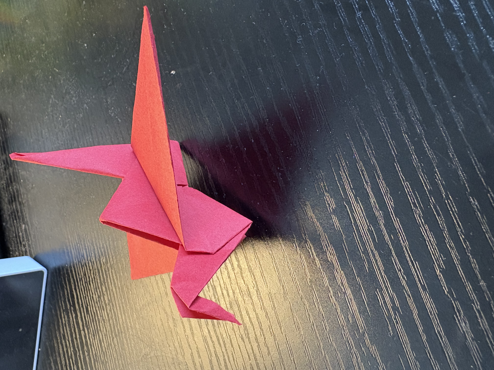

Welcome to My Origami World
About My Origami Journey
I have always felt that folding a simple square piece of paper into complex shapes and colors was really satisfying and beautiful. I first began to fold origami when I was very little. Paper airplanes, water bombs and fortune tellers were the most mystifying and beautiful creations that you could've made using paper back in grade 3. In grade 7, I watched a youtube video on the world's number 1 paper airplane, which began a 3 week interval of using all the classroom's scrap paper with my friends to see whose airplane would fly the furthest. It wasn't until second year of college that I revisited my passion for folding a square piece of paper.
My drive for folding paper was rekindled by the origami club stand at club fair. They were teaching anyone who was interested to fold a paper crane. So, on a whim, I decided to join in. The paper crane was a challenging but intuitive piece to fold. The reverse fold after you get the initial square of the crane was the hardest part of the process. Despite it being challenging, I was still left with a sense of accomplishment, and something tangible to show the process and the struggle that I took to fold it. It felt rewarding and challenging. Since then, I have tried various other folds. Unfortunately, I had decided to throw most of my origami out since they got drenched on my windowsill while I wasn't here in Boston. I continue trying to fold origami with my roommates, and it's become a relaxing activity we do together when taking breaks from studying.